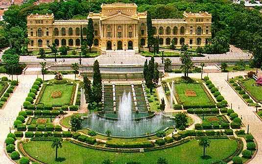
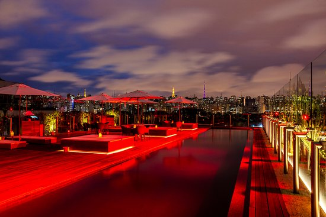
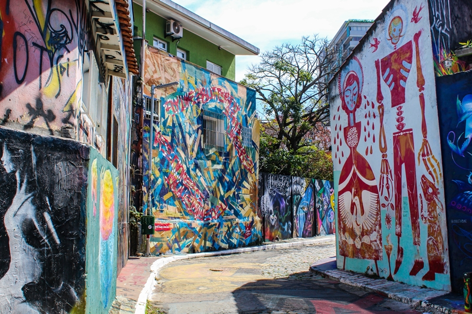

O edifício foi feito como monumento em homenagem a Independência do Brasil e demorou 6 anos para ser construído. Ninguém nunca morou no prédio, nem o imperador, nem a imperatriz ou mesmo qualquer integrante da corte. D. Pedro I nem chegou a ver o monumento pronto, já que morreu 61 anos antes da abertura.
Localizado na cobertura do Hotel Unique, um dos mais conhecidos da cidade, o bar recebe decoração sofisticada e oferece pratos típicos brasileiros e de outros países. O Skye possui uma piscina com revestimento vermelho e um lounge com vista panorâmica para o Parque Ibirapuera e todo o horizonte de São Paulo, incluindo o skyline da Avenida Paulista.
O Beco do Batma no coração da Vila Madalena é uma das principais atrações turísticas de São Paulo. Entre vielas e travessas, o local atrai paulistanos, turistas e muitos estrangeiros que buscam, na vida boêmia do bairro, se encantar com as cores do grafite e desenhos que se estendem por pequenas ruas, onde o trânsito só é permitido para pedestres.
Acessem o link para saber mais